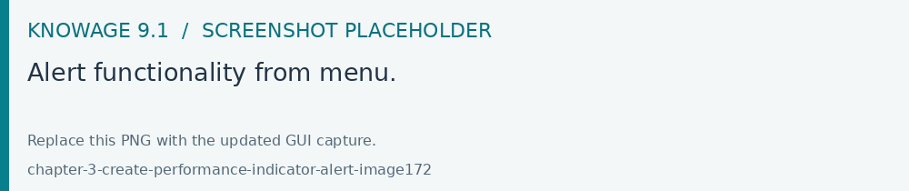
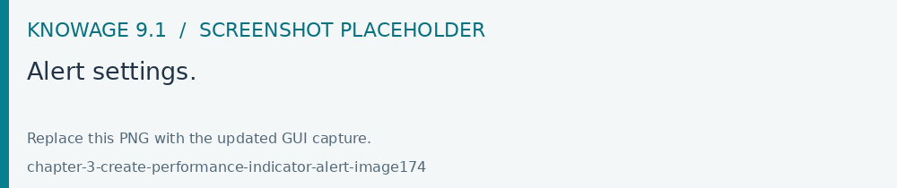
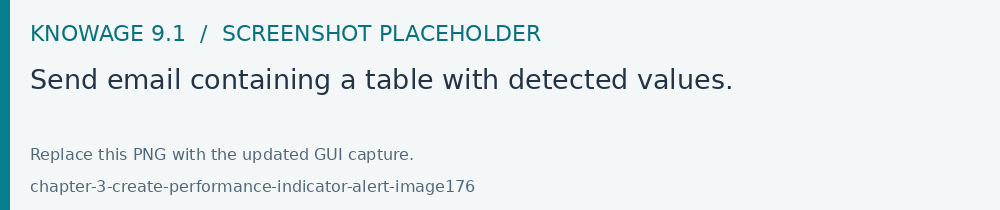
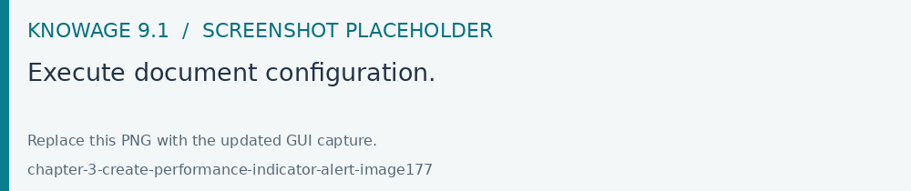

Creating an Alert
Open Modules > Tools > Alert to configure a rule and its actions. Select the required KPI or source, define the condition and test the rule before activating its schedule. Available actions depend on your edition.
The Alert functionality available under the Tool section of Knowage main menu, as shown in Figure below, allows you to implement a control over events. Technically it consists of monitoring the possible overcoming of fixed thresholds and the consequent signal of anomalies by means of an email or by launching an ETL process. In next sections we will see in details how to configure the alarms using the Alert feature.

Fig. 584 Alert functionality from menu.
Implementation of an Alert
The Alert definition window diplays the list of existing alerts and a search box at the top of the page to facilitate to browse over the items. In the right top corner of the list it is available the “Plus” icon to configure a new alert.
By Clicking the Plus icon the Alert editor section opens.
Give a name and select the KPI listener from the combobox. Then indicate the start date, the start time and eventually the Alert implementation end date. Specify the time interval and how many times it must be repeated. At this point choose between Single Execution and Event before trigger actions: in the first case the alert must signal the anomaly just once its occurence while in the other case it must send the alarms when the irregularity occurs as many times as specified. Note indeed that the box is editable and it must contain a number which indicates the number of irregularities that has to be detected before the alert starts.

Fig. 585 Alert settings.
At the bottom of the page associate the KPI of interest and select the action by clicking on the Add action button. Here you can choose between Send mail, Execute ETL document or Context Broker.
Send email configuration.
In case the Send mail option is selected, the mail body of the mail can contain a plain text message or a table showing the registered KPI values which activated the alert. To enable table visualization option the body text has to include the placeholder *TABLE_VALUE*. If the thresholds are overcomed the functionality sends the email to the email recipients. Below an example.

Fig. 586 Send email containing a table with detected values.
An example in case the Execute ETL document option is selected, the alert will launch an ETL process when the chosen thresholds are ovecomed. Namely, the functionality will launch a process to execute batch actions as the writing of proper tables of a DWH, creation of a file, the call to a log service. Note that the ETL process must exist as a document in Knowage server. An example is given in the following figure.

Fig. 587 Execute document configuration.
Save both the action and the alert configuration settings to store your alert. Remember that it is possible to schedule more than one monitoring over the same alert definition.